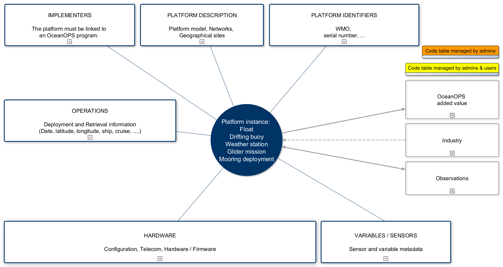

Background
This documentation describes the standard metadata managed and required by OceanOPS to support efficiently each Global Ocean Observing System (GOOS)
Observation Coordination Group (OCG) networks implementation and enable an integrated perspective on the GOOS.
OceanOPS 2021-2025 strategic plan’s goal #2 is to “Lead metadata standardization and integration across the global ocean observing networks”, including the following objectives:
- 2.1 Set and disseminate the standard and best practices for metadata harmonization
- 2.2 Develop the web services required for machine-to-machine metadata exchange and access
- 2.3 Provide a harmonized and high-quality standard of metadata across networks
- 2.4 Assist users on data access and available data services
- 2.5 Connect OceanOPS services with IOC and WMO international systems
This modelling is built upon each network specific requirements, enriching gradually an integrated perspective, and connecting as far as possible the met-ocean standards (such as WIGOS Metadata Representation (WMDR) or SeaDataNet). These metadata are required to perform two functions essential to the Observing Networks, and mandated by the Joint-Technical Commission for Oceanography and Marine Meteorology as its 5th session:
- The allocation of unique WMO/WIGOS identifiers to each met-ocean observing platform (Decision 29)
- The routine and integrated submission of WIGOS compliant metadata to the WMO Observing Systems Capability Analysis and Review system (OSCAR) (Decision 30)
The latter represents some of the “output metadata” provided by OceanOPS Information System and will be covered in another documentation.
The “input metadata”, specified in a later section, are the foundation of OceanOPS Information System, its web-based dashboard, API and resulting services. They come from implementers, directly, or/and via the observing networks data/metadata flows when they are operational and phased with OceanOPS requirements.
These metadata integrated into OceanOPS are also key from networks and operator’s perspective. They allow visualization, communication, reporting, performance analysis tools, planning, quality control feedback (from users to producers), discovery of system capabilities, telecommunications/sensor/platform market status, etc. They are essential for the visibility of an observing network, and its national or Institutional contributions.
Any suggestion or comments are more than appreciated, please email them at metadata@ocean-ops.org, or submitted as a new discussion on the dedicated GitHub repository.
Concepts
Introduction
As the number of information systems is growing as well as networks metadata specifications are defined, it is important to clearly define the concepts being used within the OceanOPS’ scope and relationships between those concepts. This section might then evolve regularly based on new systems integration or evolution of the ones already covered.
Please note that to set up an integrated system, OceanOPS had to pick default terms to name the different concepts in the integrated perspective. These default terms are not definitive and might not suit every purpose or view, thus the need to specify them here and to improve them when needed. Aliases can be, however, defined for downstream network specific services (like a web interface), so networks are encouraged to liaise with the OceanOPS team to request such aliases.
Structuring the GOOS
The GOOS components are organized in “programs” (the implementing entity) contributing to one “observing network” and operating N “platforms”. These platforms can be regrouped or tagged under different labels, which are there-after called “networks” or “sites”.
The Figure 1 summarizes how OceanOPS structures the GOOS components in the Information System.
Examples:
GOOS > DBCP > MétéoFrance Drifting Buoy program > drifting buoys (in the network E-SURFMAR, Global Drifter Array)
GOOS > SOT > VOS-DE program > stations (in the network E-SURFMAR, VOS)
GOOS > Argo > Argo JAMSTEC program > floats (in the network Deep Argo, BGC-Argo, TPOS, etc.)
In the following sections, you will find metadata schemes and the description of the main OceanOPS concepts. There are many concepts, but a certain number of them needs to be defined/registered only once in the OceanOPS system to set up the environment. Then this environment will be common to a group of platforms and derived from other metadata as appropriate.
- OceanOPS program set up: The first step is to ensure that the implementing program (mandatory element) exists in the OceanOPS system and is well defined. An OceanOPS program is defined by a country, a list of default contact points and agencies, with dedicated roles. To set up a new implementing program, or to update program metadata (contact, agency, or role information), please contact OceanOPS team.
- Code tables: New ships and new cruises records relevant to a platform description can be registered by users. Once registered, these new elements can be easily declared as a metadata of a platform (deployment / recovery ship or cruise).
Concept – Simple chart
See the detailed chart here.
Concept definitions
The following tables list the main concepts composing OceanOPS’ metadata model. They include the
default name of the concept, a description, known aliases and any code tables linked to that concept
and mapped at OceanOPS (not necessarily used as it, but mapped). This list is not exhaustive and
will be completed over time.
(**) Auto calculated/derived metadata
Implementers
As described below, the definition of this environment must be done only once (or to be updated when for new contact information, …)
| Entity | Description | Known aliases | Code tables |
|---|---|---|---|
| Agency | An agency is an organization, a manufacturer, a data centre, POGO member, etc. A role can be dedicated to each one (program/agency, platform/agency). Agencies can be regrouped under 'POGO'. | Organization, platform_maker | EDMO |
| Program |
A program defines a group of platforms or cruises managed by the same lead agency (generally national). It materializes the implementing, operating, and responsible team.
A program is bound to:
|
Institution, project_name | WIGOS 2-02 |
| Country (**) |
The country list used by OceanOPS is a union of the member state lists of the
IOC-UNESCO and the WMO, plus 'Europe'. ISO 3166-1 is used to identify them. Countries can be grouped according to different criteria, e.g.:
|
Member State (IOC-UNESCO), Member Territory (WMO) | C32 (International Standards Organisation countries) |
| Contact |
People involved in a program, with a dedicated role(s). Contacts registered for
a program will be automatically linked to a platform managed by the program.
Users can also add extra contacts/roles for some platforms. |
ORCiD |
General platform description
| Entity | Description | Known aliases | Code tables |
|---|---|---|---|
| Platform |
All that can be deployed or installed, and equipped with sensors (an observing entity)
is considered as a “Platform” at OceanOPS:
|
Station (VOS), Observing facility/platform/station (WIGOS) | |
| Platform model | The most detailed level of categorization of a platform, ideally containing manufacturer’s information and product reference. | ||
| Platform type (**) | The middle level of categorization of a platform. It makes the link between the platform’s category (family) and the manufacturer’s model. | WIGOS 3-04 | |
| Platform family (**) | The highest level of categorization of a platform. Describes to what category instrument this platform belongs to. | ||
| Network |
A network is a grouping of platforms, crossing the boundaries of the program.
It is usually virtual and represents a common effort or way to measure data.
It can represent a mutualized scientific/geographical goal (array), a platform
class, or logistical/funding/etc. approach. The Network entity is then described by:
|
Project_name, array | |
| Site | A site is a geographical area in which the platform operates. | site_code |
Platform identifiers
| Entity | Description | Known aliases | Code tables |
|---|---|---|---|
| Reference |
The unique OceanOPS platform identifier:
|
||
| GTS ID | The identifier used to tag data sent on the Global Telecommunication System. Code for a given time window, multiple ones can be used across a platform lifetime (not unique). | WMO number/code/ID, platform_number, wmo_platform_code | |
| WIGOS ID | The WIGOS identifier (WMO Integrated Global Observing System) is allocated to a platform and used for interoperability with OSCAR (Observing Systems Capability Analysis and Review Tool). | ||
| Serial number | The serial number of the platform. | Float_serial_no, glider_serial_no | |
| Internal ID | The local identifier allocated by the program/institute which deploys and maintains the platform. |
Operations
| Entity | Description | Known aliases | Code tables |
|---|---|---|---|
| Ship |
A ship is the vehicle that carries a platform (the shipment) either upon
its deployment (e.g., deployment of a drifting buoy) or during a certain
operation time (e.g., a VOS station). It is usually a boat (Research Vessel,
merchant ship, etc.) but can also take another form like an airplane. The ship is described by:
|
||
| Ship type |
Entity representing the type of the Ship. |
Vessel type (Pub47/SOT) | |
| Cruise |
A cruise represents a travel of a ship, over a given period, with a specific purpose. A cruise is described by:
|
Deployment cruise, Retrieval cruise, deployment_cruise_id | |
| Deployment |
The definition of a platform deployment is a bit different depending on the observing network.
For platforms deployed at sea (Argo, OceanGliders, DBCP, OceanSITES), the deployment is the
moment the platform is launched at sea. For platforms installed on a ship (SOT), the deployment
is the time the platform is ready to operate and is equivalent to an installation date.
A deployment is described by:
|
||
| Retrieval |
The retrieval information is relevant to the platform recovery or end of life for platform
at sea, or to de-installation of a platform on a ship. A recovery is described by:
|
Recovery | |
| Platform status (**) | OceanOPS defines several statuses, which are used to track a platform during its lifecycle. They are automatically set, depending on the metadata we received at the registration (deployment plans) and in real time (through observations, i.e., GTS/GDAC). | WIGOS 3-09 | |
| Ending cause | The ending cause describes the reason why the platform is closed or dead. |
Variables
| Entity | Description | Known aliases | Code tables |
|---|---|---|---|
| Variable (**) | Variables describe what is measured by a sensor on a platform. This entity contains simplified variables, to ease discovery and statistics computation. The variables can be derived from the sensor model or specified along with the sensor model with other details. | Parameter, Observed Variable |
WIGOS 1-01 P01 (BODC Parameter Usage Vocabulary) P02 (SeaDataNet Parameter Discovery Vocabulary) |
| Sensor model | This entity represents a package of sensor types (sensors, gauges, probes, etc.). It is usually provided by a manufacturer alongside a serial number. | Instrument, Device |
L22 (SeaVoX) R27 (Argo) |
| Sensor model set up attributes |
Several attributes describe the properties of a sensor installed on a platform, including (list not exhaustive):
|
||
| Sensor type (**) | A sensor type is a high categorization level of sensor, performing one measurement for a given variable. A Sensor Model can be linked to several sensor types, defining a default set of variables. | Sensor | L05 (SeaDataNet Device Categories) |
Hardware
| Entity | Description | Known aliases | Code tables |
|---|---|---|---|
| Telecom and backup telecom |
A set of metadata describes the telecom used on the platform:
|
||
| Other hardware attributes |
|
||
| Software |
Description of the software that performs on the platform:
|
||
| Firmware |
Description of the firmware that performs on the platform:
|
||
| Configuration |
Configuration metadata (when applicable):
|
Concepts – Detailed entity diagram
Setting up of the environment
User account and edit rights
Step 1: The user needs to have an OceanOPS account, and be logged in.
Step 2: To have edit rights, the user must be declared as a contact
point of a program with a dedicated role (Data Manager, PI, …).
Please contact OceanOPS team for such needs.
OceanOPS program set up
Properties of an OceanOPS program:
- A program defines the implementing entity.
- It is bound to one country and only one, identified as the main responsible entity.
- A program is bound to a set of default agencies with different roles. If several agencies are involved, one should be identified as lead.
- A program is bound to a set of default contact points with dedicated roles and editing rights on the website.
Each OceanOPS platform must be linked to one and only one program, the definition of this context in the OceanOPS system is therefore fundamental. The default values for contact points and agencies can be enriched which per platform information.
The setting up of the program environment in the OceanOPS database in managed only by the database administrators.
OceanOPS code tables / Existing standards
Before defining a code table, OceanOPS tries to identify if a standard already exists (BODC code tables or other standards, e.g., country (ISO 3166) and ship (ICES) tables). If such a standard is found, OceanOPS uses it. If several ones exist, OceanOPS identifies the one that match best the needs and tries to map as far as possible to the other ones.
Code tables accessible to users
Once connected to the OceanOPS website, the user can register new records in some existing code tables to use then these new records as platform metadata. The user can submit:
- a new ship
- a new cruise
Ship
To declare it as a deployment or a retrieval ship, or to link a ship to a cruise, the user can:
- register a new ship
- or update the metadata of an existing one, in case of change of name, call sign or country
The mandatory fields to register a new ship are:
- The name of the ship
- The ship type
- The country
Every time a new ship is registered, a notification is sent to the OceanOPS team who will then check the metadata and, if needed, request a code to ICES. This ICES code will be registered as a ship metadata in the OceanOPS database.
Cruise
The user can register:
- Past cruises to add them as platform deployment or platform retrieval metadata
- Planned cruises to enable the community to plan for future platform operations
A cruise is described with core metadata such as:
- The ship
- The dates (start date and end date). Planned / Approximative dates for next cruises.
- EXPOCODE (concatenation of ICES code and 'YYYYMMDD' formatted departure date)
- List of contact points
- If available, an approximative route (with waypoints)
and many other metadata like the mobilization/demobilization dates, the programs (if applicable), etc..
Platform metadata submission - Supported formats
Metadata can be submitted to OceanOPS via different formats, even if the standard one is a simple CSV that can work across all platforms and for past, present, and future activities. If the content of such files is standard (meeting code tables requirements) a crawling function can be easily set up. Several demonstration files are available:
- Argo demo csv file
- OceanSITES demo csv file
- OceanGliders demo csv file
- DBCP demo csv file
- VOS demo csv file
For now, most of the groups submit their files on-line, in different formats, while the web interface allows to do code tables mapping and secure several metadata on the fly (e.g., unique ship or sensor model), with the capability of processing a batch of files or platforms.
Sensor models / variables and all their metadata (start date, end date, serial number, height/depth, etc.) can also be processed using a secondary file. There is one prerequisite for uploading such a secondary file: the platform must already exist in the OceanOPS database (the OceanOPS platform reference will be the mapping key). The advantage of this file is that the sensor / variable information is displayed as a table and is therefore easily readable and editable by contributors. A demonstration file is available here:
Several OCG networks have developed a complete data flow, including metadata, meeting OceanOPS requirements fully or partially. Some other networks rely on OceanOPS to manage their full set of metadata (e.g., VOS).
The following table summarizes how the task is progressing with each network, and which formats are enabled.
The number of stars indicates the level of compatibility of files with OceanOPS metadata requirements.
*: basic metadata
**: rather complete metadata but few attributes need control through a code table
***: complete metadata with controlled vocabulary – ready for M2M crawling.
(*) improvement underway
| Argo Core, BGC, Deep |
OceanGliders | SOT VOS, ASAP, SOOP |
OceanSITES | DBCP DB |
DBCP MB |
AniBOS | GO-SHIP | GLOSS | Ship Cruises | HF Radars | OceanOPS (other platforms / integrated) | |
|---|---|---|---|---|---|---|---|---|---|---|---|---|
| OceanOPS web | *** | *** | *** | **(*) | *** | **(*) | * | ** | * | ** | * | **(*) |
| OceanOPS CSV file | *** | *** | *** | **(*) | *** | **(*) | * | ** | * | ** | * | **(*) |
| NetCDF file | **(*) V2.2, 3.1 |
*** beta 1.0 |
(***) | (***) | Planned | Planned? | ? | ? | ||||
| API feed | EuroArgo monitoring | SIO planned | (CCHDO) | MFP R/V cruises piloting (UK) | ||||||||
| Other formats | **(*) US metafile v1, v2 |
*** Coriolis JSON v1.2, v1.3 |
PUB47 DEPRECATED |
**(*) AOML deployment log |
Excel DEPRECATED |
Workflow
Metadata submission
- Create an account on ocean-ops.org if not done yet. Cf. user account and edit rights.
- Contact OceanOPS team to determine under which program(s) your elements will be saved and thus giving your edit rights where appropriate. Contact points and agencies involved will be tagged under the program elements. Cf. program set up.
- You can now register/edit your elements under the program(s) you are associated with. Several cases:
- You want to submit elements and you want a GTS identifier. Fill in the information OceanOPS requires (Cf. How to use the Request Identifiers interface) and get in return the GTS identifier(s) (i.e., WMO codes), OceanOPS reference(s) and WIGOS identifier(s).
- You already have element(s) with corresponding GTS identifier(s) and want to submit them to OceanOPS. Fill in the information OceanOPS requires (web form or CSV) and get in return the OceanOPS reference(s) and WIGOS identifier(s). This case will slowly be deprecated since OceanOPS metadata submission will allocate the WMO code (cf. previous item).
- OceanOPS already has your element(s) and you want to update the information. Fill in the information OceanOPS requires (web edit form or CSV), specifying OceanOPS reference as the mapping key.
- If the format is stable, accepted, and its vocabulary (content) controlled (i.e. uploading the file on the interface requires no manual intervention prior to submission), a machine-to-machine exchange can be set up.
All data flows will need a WMO/WIGOS identifier. These will be provided automatically by a machine (in exchange of basic metadata).
Reference/WMO/WIGOS identifiers
Preliminary workflow
Requesting new WMO identifiers will be done through the submission mechanism described above. Their allocation will trigger the allocation of a WIGOS identifier and an OceanOPS reference. It will not be necessary to request batches of IDs for years to come, they will be randomly allocated (following a minimal pattern) on the fly while creating records in the system.
However, batches will still be allocated for planning activities, with the minimum metadata required being the program. A recycling process will be set up to release unused identifiers (with no further metadata provided/no observations). Users will be/are allowed to request batches of new identifiers themselves. See How to use the Request Identifiers interface for a detailed description of the web form, and Request identifiers through the API for a machine-to-machine usage.
WIGOS identifiers (WSI) and new WMO identifier allocation scheme
The WSI and the new scheme to allocate WMO identifiers/codes (included in the WSI as local identifier) is described in the document Guide to WMO Integrated Global Observing System (2021 update, Chap. 10.2).How to use the Request Identifiers interface
The tool enables user to request batches of platform identifiers (GTS/WMO and WIGOS IDs) for instruments that are at least funded. The user can request from 1 to a maximum of 100 identifiers at a time.
Core metadata is required to get a draft list of records, automatically generated by the interface. Then, this list is easily customizable by the user, before submitting the request to book the batch of IDs.
Once the request is validated and submitted, the platforms will be registered in the OceanOPS system with the “PROBABLE” status. Each set of records sharing the same model within a request will be assigned with a batch reference.
To keep track of their IDs request, the user can receive an email with the list of WMO IDs, and/or download a csv file with all the information. The user can also find the platforms through the OceanOPS search engine. The results of this request can be used as a basis for updating the records when needed (through the web form or uploading the CSV, updating with more metadata).
Identifiers allocation rules:
- Identifiers will follow the allocation scheme and then will be randomly generated: if several identifiers are requested at a time, they will not follow each other (not a sequence).
- The identifiers generated are reserved for a certain time. If they are not used in the OceanOPS system over this period, they will be recycled.
Here are the detailed steps to follow to request ID(s):
- Go to the OceanOPS website, on the appropriate observing system environment (Argo, DBCP,…).
- To access the “Request IDs” tool, you need to be logged in and declared as a contact point of the program relevant to your request. Cf. user account and edit rights.
- In the top toolbar on the OceanOPS website, click on “Submit” and “Request IDs” to access the web form:
Step 1: Select values
The program and deployment date (UTC) are mandatory fields. The model of the platform, if not filled in, will be inferred from the program information (The definition of an OceanOPS program contains necessarily a generic platform model). You can also submit a specific platform model, the deployment position (latitude and longitude), and the batch status (FUNDED, IN STOCK or ORDERED). Deployment information (date, latitude, longitude) can be first filled in as assumed/expected information and updated when confirmed.
In the “Amount of IDs to request” field, put the number of needed identifiers, from 1 to a maximum of 100 requests at a time. This will generate a preview of this number of records (with default values as filled in previously), pending submission, allowing you to customize every entry.Step 2: Customize
In step 2, you can customize the metadata of each line/record that corresponds to one IDs request: click on the metadata you want to specify, enter the new value, and validate your update.Step 3: Submit request
Once the customization table is checked and up to date, you can submit your request.
Step 4: View results
The result of your request will be visible in the same interface. You can also access the information on your request:
- In an email, with the complete list of WMO IDs generated by your request. You can choose to receive this confirmation email at step 3 (the process will send the email if not specified otherwise).
- In a csv file, that you can download in step 4, with core information: program, platform model, deployment date, platform serial number, internal identifier, platform reference, deployment latitude, deployment longitude, WMO ID, WIGOS ID, batch request reference.
This csv file can be used as a basis to update the metadata in the OceanOPS database by updating existing fields (e.g., deployment date, deployment latitude, deployment longitude), or by adding new ones (e.g., sensor model details and telecom information). The platform reference will be the mapping key to update platform metadata. Every record freshly created can now be edited through a web form as well.
Request identifiers through the API
Batches of identifiers can be requested through the underlying REST API, documented here: https://www.ocean-ops.org/api/swagger/?url=https://www.ocean-ops.org/apiid/1/oceanops-apiid.yaml.
This API requires a couple of id-token to authenticate the user while using it. These identifying information can be obtained following the instructions in Obtain an API token.
Obtain an API token
It is possible to request an API token once logged in on the OceanOPS web dashboard, under the API access window in the user menu:
A new window will appear, allowing to request a token:
When clicking 'Request token', the interface will display the request token.
A token has an end validity date, defaulting to one year. If you need to extend the validity of a token, please request a new one (requires updating scripts/codes where it is used) or reach out to OceanOPS support. Only one token per user can be activated at a time.
This token has obviously been disabled since!
You can view your active token IDs, validity and usage information, usage instruction by visiting this API access window later:
This window also enables you to disable a token, allowing you request a new one if needed (e.g., expired or forgotten).
The token can be used as instructed in this API Access window or in the documentation of the APIs.
Exhaustive list of inputs
In the table below, you will find the detailed list of input metadata, with the following columns:
- OceanOPS default name (with the location in the OceanOPS database)
- Format / link to code table
- Matching key if using a code table
- OceanOPS default CSV header name
- Known aliases
- Comment
- OceanOPS metadata level requirement (M: Mandatory, C: Conditional, O: Optional, a ‘*’ indicates that the field is highly desirable to reach a high quality level of metadata)
- External code tables (WIGOS, BODC, etc.)
- Corresponding observing network vocabulary and specificities
These metadata requirements are evolutive, adaptative depending on the network, and based on the readiness of operations: a planned deployment will require less information than a deployed instrument. The table is meant to show the extended requirements, for a fully functional observing element of the GOOS.
| OceanOPS metadata | Format | Matching field/key | OceanOPS CSV default field | Known aliases | Comment | Metadata level | References | Argo | Glider | OceanSITES | SOT |
|---|
FAQ - How to
How to submit sensor metadata as a table?
All platform metadata can be submitted via a single csv file, including sensor information organized in sub-cells in a CSV value. Depending on the type of platform, each sensor metadata cell may contain many sub-cells, and it can be difficult for users to read and manage this information, especially if the file is prepared manually.
To make the sensor metadata management easier, the user can also upload secondary files with all the sensor information, displayed as a table. Here are some details about these secondary files:
The platform needs to exist in the OceanOPS database
The mandatory columns are:
The OceanOPS REF of the platform
A "CSV SENSORS" column which will remain empty, but allows the upload tool to identify the format of the input file (the upload tool is the same for files containing all the platform metadata and for secondary sensor files)
All sensor metadata can be processed via this file (sensor models / variables, start date, end date, calibration date, next calibration date, height/depth, etc.)
In the file, there will be as many lines as there are sensors/variables installed on the platform
Several OceanOPS platforms can be managed in one file (identified with the REF)